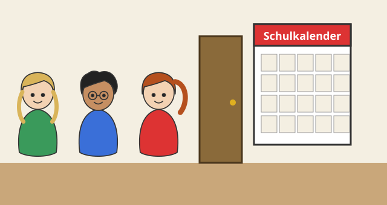

Wann ist das Schulfest? in, on und at
Mit einem KI-Tutor lernen
Ein KI-Tutor erklärt dir diese Seite und hilft dir bei den Aufgaben. Wähl deinen Assistenten:
Mit Claude öffnen Mit ChatGPT öffnen Mit Mistral Vibe öffnen
Du nutzt dein eigenes Konto beim Anbieter. Der Assistent ist kein Angebot von lernapps.net: lernapps liefert nur Inhalte und Aufgaben. Die Wahl gilt für alle Seiten, nur auf diesem Gerät.
Mr Hill trägt das Schulfest ein

Von links: Sophie (Zöpfe), Amir (Brille) und Ellie (roter Pferdeschwanz). Rechts hängt der Schulkalender.
Quelle: eigene Zeichnung. Lizenz: CC-BY-4.0.Neben der Lagerraumtür hängt der Schulkalender. Mr Hill trägt das Schulfest ein und sagt: „The fair is at ten o'clock.“ Das Schulfest heißt auf Englisch school fair und hat eine feste Uhrzeit. Die Kinder tragen dazu die Geburtstage ein.
Das kannst du danach: Du sagst mit in, on und at, wann etwas ist.
| Wort | Bedeutung |
|---|---|
| fair | Fest |
| birthday | Geburtstag |
| lesson | Unterrichtsstunde |
| lunch | Mittagessen |
| start | beginnen |
| school | Schule |
| English | Englisch |
| party | Feier |
| March | März |
Aufgabe
Lösung
um zehn Uhr richtige Antwort
at ten o'clock heißt „um zehn Uhr“. Das Fest beginnt um diese Uhrzeit.
im Oktober
„Im Oktober“ wäre in October. Mr Hill spricht von einer Uhrzeit.
am Samstag
„Am Samstag“ wäre on Saturday. Hier steht eine Uhrzeit.
at steht bei einer Uhrzeit.
Drei Zeit-Behälter
Auch für die Zeit gibt es Etiketten. Wie bei den Kisten und Gläsern klebt auch hier ein Etikett. Die Zeit steckt in einem Behälter, den wir Zeit-Behälter nennen. in ist der große Rahmen für lange Zeit: Monate und Jahre. on ist die Fläche für einen einzelnen Tag. at ist der Punkt für eine genaue Uhrzeit.

Der große Rahmen, die Fläche und der Punkt.
Quelle: eigene Zeichnung. Lizenz: CC-BY-4.0.| Zeit-Behälter | Beispiel |
|---|---|
| in | in 2027 |
| on | on Tuesday |
| at | at seven o'clock |
Merke
Bei einem Datum sagst du on: on 12 October. Der Monat allein bekommt in: in December. Einige feste Ausdrücke musst du lernen: in the morning, in the afternoon, in the evening, aber at night.
Übung
Aufgabe
Wähle in, on oder at.
Tipp
Frag dich, ob es ein Monat oder Jahr ist (großer Rahmen), ein Tag oder Datum (Fläche) oder eine Uhrzeit (Punkt).
- Ellies Geburtstag ist im Juli. → Ellie's birthday is … July.
- Peters Geburtstag ist am 5. Mai. → Peter's birthday is … 5 May.
- Die Schule beginnt um Viertel vor neun. → School starts … a quarter to nine.
- Die Englischstunde ist am Montag. → The English lesson is … Monday.
Lösung
- Ellie's birthday is in July.
- Peter's birthday is on 5 May.
- School starts at a quarter to nine.
- The English lesson is on Monday.
Aufgabe
Lösung
Richtige Antwort: July – in, der große Rahmen; Saturday – on, die Fläche; half past seven – at, der Punkt
Monate und Jahre sind große Rahmen (in), Tage sind Flächen (on), Uhrzeiten sind Punkte (at).
Aufgabe
Schreibe den Satz auf Englisch.
Tipp
Erst die Zeitangabe bestimmen (Monat, Tag, Datum oder Uhrzeit), dann in, on oder at wählen.
- Amirs Geburtstag ist im Oktober.
- Das Schulfest ist am Samstag.
- Das Mittagessen ist um halb eins.
- Ellies Geburtstag ist am 10. Juli.
Lösung
- Amir's birthday is in October.
- The school fair is on Saturday. (auch richtig: The fair is on Saturday.)
- The lunch is at half past twelve. (auch richtig: lunch is at half past twelve.; Lunch is at twelve thirty.; Lunch is at 12:30.; Lunch is at 12.30.)
- Ellie's birthday is on 10 July. (auch richtig: Ellie's birthday is on 10th July.; Ellie's birthday is on July 10.; Ellie's birthday is on the 10th of July.)
Aufgabe
Lösung
Richtige Antwort: 1. The, 2. fair, 3. is, 4. on, 5. Saturday, 6. at, 7. ten, 8. o'clock
Zuerst kommt, was stattfindet. Danach steht on mit dem Tag und zuletzt at mit der Uhrzeit.
Aufgabe
Lösung
Richtige Antwort: Die Aussage stimmt nicht.
Monday ist ein einzelner Tag, also eine Fläche. Es heißt on Monday.
Aufgabe
Hör zu und schreibe den ganzen Satz auf.
Tipp
Hör genau auf das Wort vor der Zeit. Ist es in, on oder at?
- KI
- KI
- KI
Lösung
- The party is on Friday.
- Mrs Parker's birthday is in March.
- The lesson is at nine o'clock.
Selbst sagen und eintragen
Aufgabe
Hör zu, sprich nach und nimm dich auf. Vergleiche dann mit dem Original.
Tipp
Hör den Satz zuerst. Sprich dann langsam nach und achte auf in, on und at.
- Sophie's lesson is at eight o'clock.KI
- Mr Hill's birthday is on 3 June.KI
- Our party is in August.KI
Zum Aufnehmen braucht diese Aufgabe JavaScript. Die Beispiele kannst du auch ohne anhören.
Lösung
- Sophie's lesson is at eight o'clock.
- Mr Hill's birthday is on 3 June.
- Our party is in August.
Offene Aufgabe
Trage drei Dinge in den Schulkalender ein: ein Fest in einem Monat, ein Treffen an einem Tag und etwas mit einer Uhrzeit (zum Beispiel: The party is in July. The lesson is on Monday. Lunch is at twelve o'clock).
Eine gute Antwort enthält:
Lösung
The fair is in December. My lesson is on Friday. Lunch is at half past twelve.
Rückblick auf die App
Der Lagerraum ist fertig und das Schulfest steht im Kalender: am ersten Samstag im Dezember um zehn Uhr. Du kannst jetzt Dinge mit dem richtigen Etikett benennen (a, an, the, some, many, much), aus einer Kiste viele machen, sagen, wem etwas gehört, Mengen angeben, mit there is und there are sagen, was es gibt, und mit in, on, under, next to, behind und at sagen, wo und wann etwas ist.